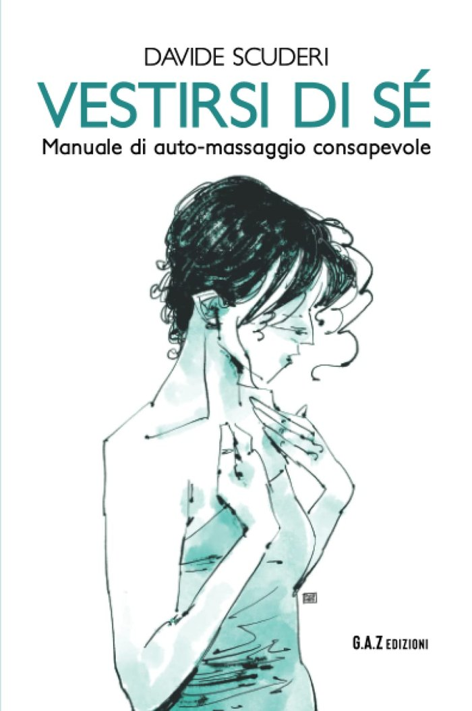

Il corpo lo tocchi
quando fa male.
Vestirsi
di sé
Manuale di auto-massaggio consapevole.
Il primo libro. Gli esercizi per tutto il corpo, una parte alla volta, con le tue mani. Da qui è cominciato tutto.
82 pagine · uscito nel 2023 · ebook e cartaceo su Amazon

Dalla copertina
Come rientrare in contatto con se stessi nell'attimo, con l'auto-massaggio consapevole.
Aumentando il proprio benessere. Diminuendo lo stress.
Che libro è
È un manuale. Più che leggerlo, si usa.
È corto
82 pagine. Non è un trattato: è un libretto da tenere a portata e riaprire alla pagina che serve, la sera in cui serve.
È pratico
Gli esercizi si fanno con le mani, sul tuo corpo, una parte alla volta. Niente attrezzi, niente palestra, niente da comprare.
È il primo
Uscito nel 2023, prima di tutti gli altri. Gli altri libri raccontano il corpo; questo insegna un gesto e ti lascia lì a farlo.
Formati
Come vuoi leggerlo.
Com'è fatto
La scheda.
| Titolo | Vestirsi di sé |
|---|---|
| Sottotitolo | Manuale di auto-massaggio consapevole |
| Autore | Davide Scuderi |
| Pagine | 82 |
| Formato | 14 × 21 cm, brossura |
| Uscita | 29 marzo 2023 |
| Editore | Youcanprint |
| ISBN | 979-1221470130 |
| Edizioni | Cartaceo e ebook Kindle |
Una nota per chi legge
Quello che il libro non fa.
Non è un racconto come gli altri libri: è un manuale, ed è corto. Chi lo apre aspettandosi una storia da leggere di fila resta spiazzato. Chi lo apre cercando un gesto da fare stasera lo trova alla pagina che ha davanti.
Non è una terapia, non sostituisce percorsi medici, psicologici o terapeutici, e non dà diagnosi. Se durante gli esercizi emergono emozioni o sensazioni intense, è importante ascoltarsi e, se serve, cercare il supporto di professionisti qualificati.
Condividi